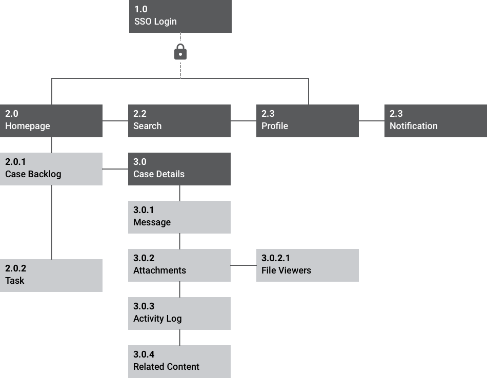
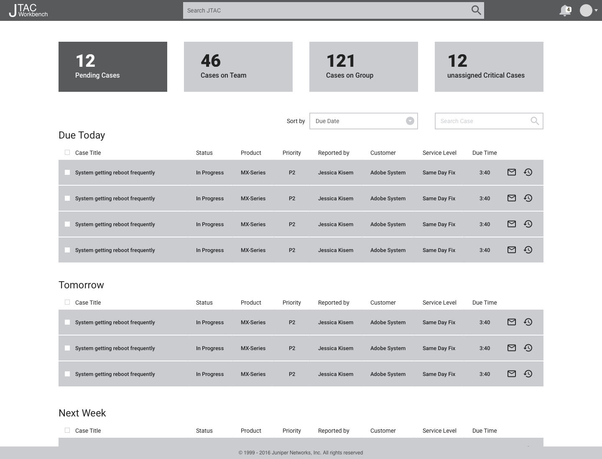

Juniper Customer Support System Application
RoleUX Designer
Duration2 Months
Team3 Members (1 Designer, 1 PM, 1 Analyst)
Contribution Interaction Design
100%
30%
70%
Introduction
Juniper is a top networking product manufacturing company, who makes routers, switches, networking management softwares and Security products etc. It is a $5.02 billion company with more then 9500 employees as of 2017. Juniper is known for its ace products and new innovations in networking technology. They business is primary focusing on cloud technology and security systems
Problem
Juniper Support Engineers would works on issue reported by their customer on juniper product. They would work on multiple cases in a day for different customers and products. It is challenging task for them to track the pending cases and work based on priority How can they manage their work better and resolve the issues on time with customer satisfaction.
The Solution
To design a workbench for the engineer, which would automatically organize the cases list based on priority. Making the case database accessible and searchable hence engineer can reuse the knowledge, automatically scanning the attachments and detecting the errors on file automatically can help the engineer to resolve the case faster and effectively. Build all the required function within in the single app hence they don’t have to jump between the tools
Discovery
Value proposition & Research
Juniper makes more than half of its revenue from support service. More then 6500 support engineers are working today, on 100 different varieties of product series and softwares. Engineers works on shift basis to provide round the clock the support both onshore and offshore.
Currently the cases are managed in SAP which is quiet expensive and difficult to build the function which are required. With lot of customization and change in data structure, it has become very slow in performance and hence engineer spending more time on case research. With frequent maintenance and expensive license cost, it would be a big cost saving for the company if the same functionality could only be achieved.
Workbench will be a tool developed as a web application and can be accessed on mobile while they are in VPN connection.
Persona
Based on the research found in the discovery period of the project persona was developed, Alan Florence. Design for Alan helped in making informed design decisions as I had the end user always in mind
Alan Florence, Sunnyvale Alan work as level 3 support engineer, working in Juniper for the last 4 years now. Earlier he was working on Cisco as a tech support engineer. At juniper he handles level 3 support for the produce series EX and BT17800. His team consist of so total 8 members including his manager, at least 3 engineer would be available for any shift. The offshore team works on both US and China. Any pending case would be handed over to them for based on customer request. he loves playing table tennis with his friends, likes spending time with his family.
Goals
- To resolve the cases assigned to him on time, without escalation
- Client satisfaction is important to him as its marked as the indication of his performance at work
- Be a knowledgeable person on the technology on which he works
Frustration
- Keep track of the pending cases and managing the list manually is a pain
- Current system takes lot of time to load, ended up spending more time on each case more than what it actually requires
- Receives plenty of notification email everyday difficult to pay attention to customer emails and repsond immedittely to them
- Jumping between multiple tools to work on a single case
Story board & Information Architecture
Keeping Alan in mind, I story boarded the users flow from the case assigned to resolving it with Workbench in his behavioral decision making. These flow helps in defining the necessary features requires for Alan to successfully navigate through the application.
Story board

Information Architecture
By narrowing the feature necessary for the workbench to function through storyboarding, I than created a sitemap to organize the page, information and navigation of the app
Wireframe



{kind=link}
{kind=link}
{kind=link}
User Testing
With defined high fidelity wireframes created based on feedback through the testing of low fidelity wireframe, a clickable prototype was than created to further test and gain more accurate feedback
Goal
To successfully navigate with in the app to their case backlog, case pending for the team, Details of a pending case which is due for today, Accepting a case and viewing the details, viewing the attachments and file info, reading the notes and adding a note and attachment, linking a related content for reference.
Methodology
The usability testing consists of three users and set of task written out for the user to follow
User Testing Task
Task 1: Find the case backlog and the pending case/s which you need to work on today
Task 2: Search for a case which is based on error code if the solution is been already known
Task 3: Assign a case to your colleague
Task 4: Analyze the config file and identify the problem on the file
Task 5: Add a note which the customer would be notified
Key Learnings
Tight Working Environment: Engineer working on a very tight environment more then what we expected. Due to high cognitive load even the solution which are known to them are not sticking early to them. They would expect a Simple clutter free tool, with care free working attitude can relive their stress and increase the productivity.
Assumption is the killer of good design: Most of the assumptions we thought about the user were not true while I test the application in their environment.
Dependency on multiple: Enigneer still wanted to use many desktop tool for analysing the file and and accessing the file on sftp with few lines of code. It will take sometime for them to build trust on the new tool and need to track after launch how much effective are those features.
Issue with Affordance: Many of the external monitors are not caliberated well. Light colors are not visible properly. Even windows and mac display the color differently. Probably if various themes are provided it might help them to view better.